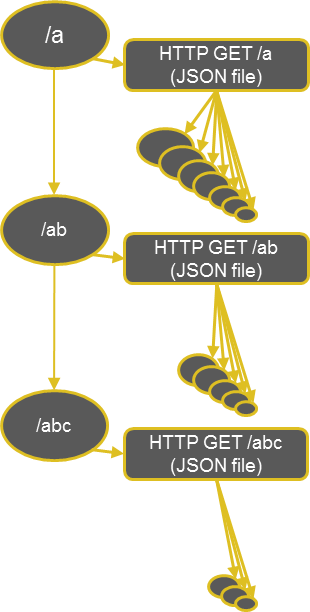

Predictive Autocomplete
Generate an Autocomplete suggestion index for your custom search applications using a Neo4j graph database and Windows Azure based cloud storage account.
Project maintained by kbastani Hosted on GitHub Pages — Theme by mattgraham
Demo
Predictive Autocomplete
Creates a hierachical JSON file index that is accessible over HTTP GET requests. Easily implemented into Bootstrap.js Type Ahead JQuery plugin. Use a Neo4j graph database for easy ranking and Windows Azure cloud storage account for JSON file storage.

Configuration
Open the PredictiveAutocomplete solution file in Microsoft Visual Studio 2012.
Open the App.config file in the PredictiveAutocomplete_Test project.
Configure the settings to point to your Neo4j instance.
Configure the settings to point to your Windows Azure storage account.
Configure the path to your public storage container that will be used to store the JSON files.

Running test project from console
Use the GetRankedNodesForQuery method to get ranked nodes from Neo4j graph database using a templated cypher query that queries an index using a supplied valid lucene query.
Each node in the index has a weight rating by specifying a relationship name which is used to determine the distinct number of incoming links to each node in your query with that relationship name.
You must specify the valid property name that is to be used as the label for the autocomplete search.
For example, if you are querying a database of books and wanted to list the names of books in the autocomplete search, then the label property would be "Title" where each book node b has b.Title as the book name.
Parameters in order:
- The case sensitive Neo4j node index name that you want to query.
- The valid lucene query that you want to use to query the supplied index.
- The relationship name that will be used to determine the number of incoming links to each node you are querying for. Leave blank if you want to query all incoming links regardless of relationship type.
- The label property name for each of your Neo4j nodes. See method summary for details.
- Skip a number of a nodes, ordered by the Neo4j assigned node id of each node you are querying for. Use this for processing batches on large graph queries.
- Limit the number of results you would like returned. Use this in combination with the skip property to process batches on large graph queries.
- Returns a list of nodes that implements IGraphNode interface, having a label and size property for ranking result order.
Use the IndexAutoCompleteKey method in the Processor class to index the autocomplete keys to blob storage uri.
Your URI to the JSON file index will be:
http://BLOB_STORAGE_NAME.blob.core.windows.net/BLOB_STORAGE_CONTAINER_ID/cache/PARTIAL_SEARCH_QUERY